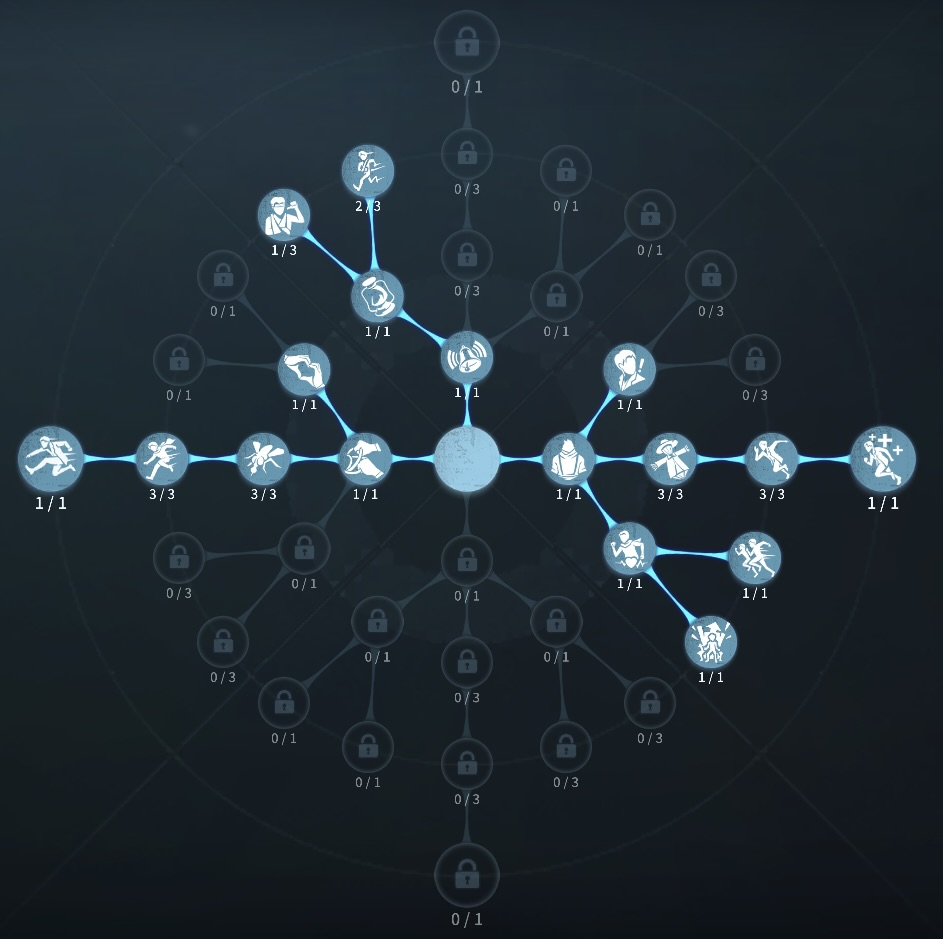
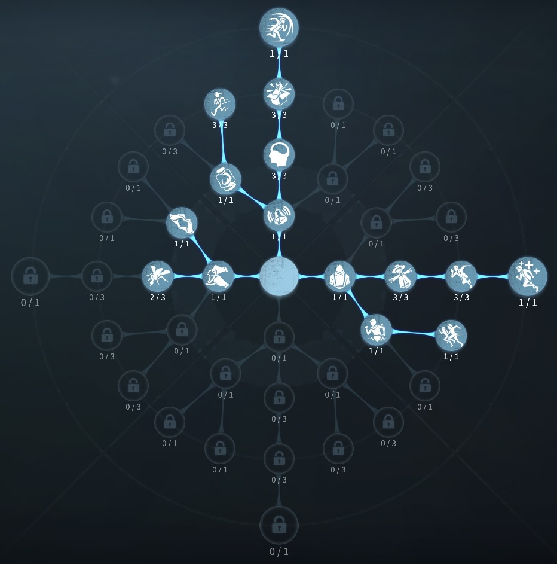

ポストマンの評価
手紙で全サバイバーを補佐
外在特質と特徴
特質1:メール
・ポストマンはメールを自分で見るかほかのサバイバーに送ることができる。 送信できる手紙は6種類からランダムで3種類選出され、送信する度に次に送信できる手紙の種類が一定のルールに準じてリセットされる。手紙による効果が継続している状態で新たな手紙を受け取ると効果は上書きされる。・メールの種類によってさまざまなバフを獲得できる。クールタイムは60秒
・切迫の手紙 15秒移動速度10％アップ
・決別の手紙 90秒内に板窓を乗り越えると1度だけ3秒間移動速度40％アップ (『膝蓋腱反射』を習得していた場合、膝蓋腱反射が優先して発動する。)
・冷静の手紙 30秒間解読速度10％アップ
・勇敢の手紙 180秒間救助速度30％アップ。椅子付近の移動速度10％アップ
・激励の手紙 別の手紙を受け取るまで永続的に板窓操作10％
・希望の手紙 120秒間ゲート開門速度15％上昇。ハッチの場所がわかる
行動不能状態であると送信は失敗する。
特質2:配達犬
・配達犬はハンターにとびかかることができ、成功するとハンターを1秒間足止めし、その後2.5秒間移動速度35%低下させる。失敗しても障害物に当たるか20mまで行くと、ポストマンのもとに戻ってきその間にハンターがいてもとびかかることができる。成功で45秒、失敗で16秒のクールタイム特質3:共感
・メールを受け取ったサバイバーと同じ効果を得る特質4:期待
・ポストマンは自分に手紙を送ることで即座に手紙の効果を得ることができる。特徴
中国本土でよく見られるサバイバーとにかく能力は強い！
しかしチェイスするとなると、犬と手紙だけなので、チェイス材料には少し不足
練度が上達したポストマンは止めようがない。
基本的な立ち回り方
1. 追われた時
追われるとわかった時、すぐに手紙を渡そう！
切迫と決別と激励のどれかを送ろう！
また、配達犬をかませることでスタン、減速効果があるので、狙っていこう！
2. 追われない時
解読に専念しよう！
試合開始時、救助職に冷静の手紙を渡そう！
冷静の手紙がない場合は、救助職にあらかじめ勇敢の手紙を送るか、ファーストチェイス引いてるサバイバーに切迫、決別、激励の手紙を送ろう！
おすすめの内在人格
膝蓋腱反射型人格
この内在人格は、防衛反応を採用することで窓枠、板を最大化強化し、観客効果で解読速度を上げた人格

フライホイール型人格
この内在人格は、防衛反応と尻に火を採用することで窓枠、板を強くし、ピア効果で救助後のチェイスを高めた人格


みんなのコメント